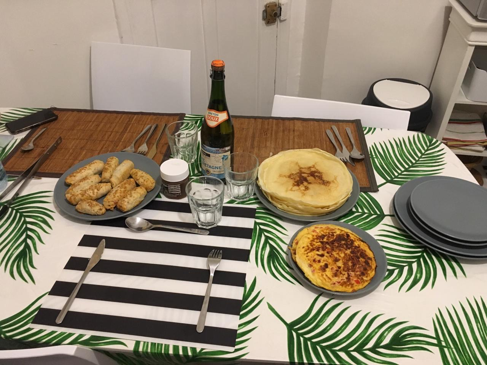

Colocación
Los primeros días estuve en viviendo con mi hermano Yaser y unas turistas que estuvieron unos pocos días en un pequeño departamento que alquilamos en el centro de la ciudad. Al pasar los días mi hermano tuvo que partir a Montpellier y al llegar la semana transcurrida llevo la primera compañera de departamento Maëlle. Resulto ser de la ciudad mas conocida de Francia, Paris. Días mas tarde llego la 2da y ultima rooming Kerime de la mismísima ciudad las famosas novelas, de Turquía. Pase unos meses ahí, una cohabitación agradable y buena. Pero como todo siempre tiene un. Final y me fui a vivir a un nuevo lugar.
 Refresca aqui